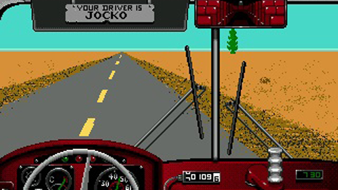

Once the Desert Bus app is downloaded onto your phone, you are ready to begin playing
the game.
To play Desert Bus:
-
Open the app. The game will open horizontally on your screen.
-
Tap your screen once to move past each of the introductory images.
-
The bus will take a moment to start. Once it does, tap your screen to begin your
drive.
-
To accelerate, tap the screen once again and hold. Your finger on the screen will serve
as your foot on the gas pedal throughout the duration of your drive.

-
To steer, simply tilt your phone to the right or left.
-
Focus! Without an alert driver, the bus will veer constantly to the right.